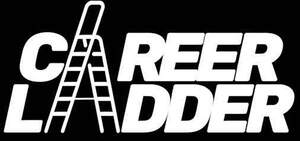

Trade Mark Journal No.2025/046 14 November 2025
UK00004289080 4 November 2025 (18,25,41)

- Class 18
- Bags; Tote bags; Shoulder bags; Canvas shopping bags; Reusable shopping bags; Men's bags; Umbrellas; Umbrellas for children; Wallets; Leather wallets; Pocket wallets; Card wallets; Purses; Coin purses; Leather purses; Evening purses; Small clutch purses; Backpacks [rucksacks]; Holdall bags; Duffel bags; Belt bags.
- Class 25
- Adult tops; Athletic tops; Tops [clothing]; Vest tops; Women's tops; Children's tops; Men's tops; T-shirts; Printed T-shirts; Short-sleeved T-shirts; T-shirts with logos; Long-sleeve T-shirts; Jumpers; Hooded jumpers; Lightweight jumpers; Children's jumpers; Women's jumpers; Men's jumpers; Crew neck jumpers [pullovers]; Trousers; Jogging trousers; Adult trousers; Men's trousers; Women's trousers; Children's trousers; Shorts; Sweat shorts; Adult shorts; Men's shorts; Women's shorts; Jackets; Wind-jackets; Lightweight jackets; Heavy jackets; Padded jackets; Men's coats; Women's coats; Socks; Ankle socks; Ladies' socks; Men's socks; Children's socks; Sports caps; Beanie hats; Hats.
- Class 41
- Entertainment services; Online entertainment; Audio entertainment services; Video film production; Production of video recordings; Production of audio and video recordings; Audio, video and multimedia program production services; Audio, video and multimedia production, and photography; Podcast entertainment; Production of podcasts; Production of video podcasts; Providing entertainment via video podcasts; Live entertainment services; Live entertainment production services; Presentation of live entertainment events; Production of live entertainment events; Publication of electronic books; Online publication of electronic books; Editing of books and electronic publications; Publication of electronic books and magazines online; Publication of multimedia material online relating to books, magazines, journals, software, games, music, and electronic publications; Organisation of competitions; Providing entertainment information via the Internet; Publication of printed matter in electronic form on the Internet; Providing information about entertainment and entertainment events via online networks and the Internet; Providing non-downloadable electronic publications from a global computer network or the Internet; Video recording services; Editing of video recordings; Production of sound and video recordings; Audio recording and production for videos and films; Recording, production and distribution of films, video and audio recordings, radio and television programs; News reporting services in the field of business news; News reporters services in the field of fashion; Online entertainment services; Publication of online journals; Online publication of electronic books and magazines; Providing online information relating to entertainment or education; Multimedia publishing; Multimedia publishing services; Multimedia publishing of electronic publications; Multimedia publishing of books, magazines, journals, music, and electronic publications; Audio, video and multimedia production, and photography services; Provision of audio and visual media via communications networks; Provision of entertainment services through the media of video-films.
KLYM&CO. LTD
Representative: Stobbs